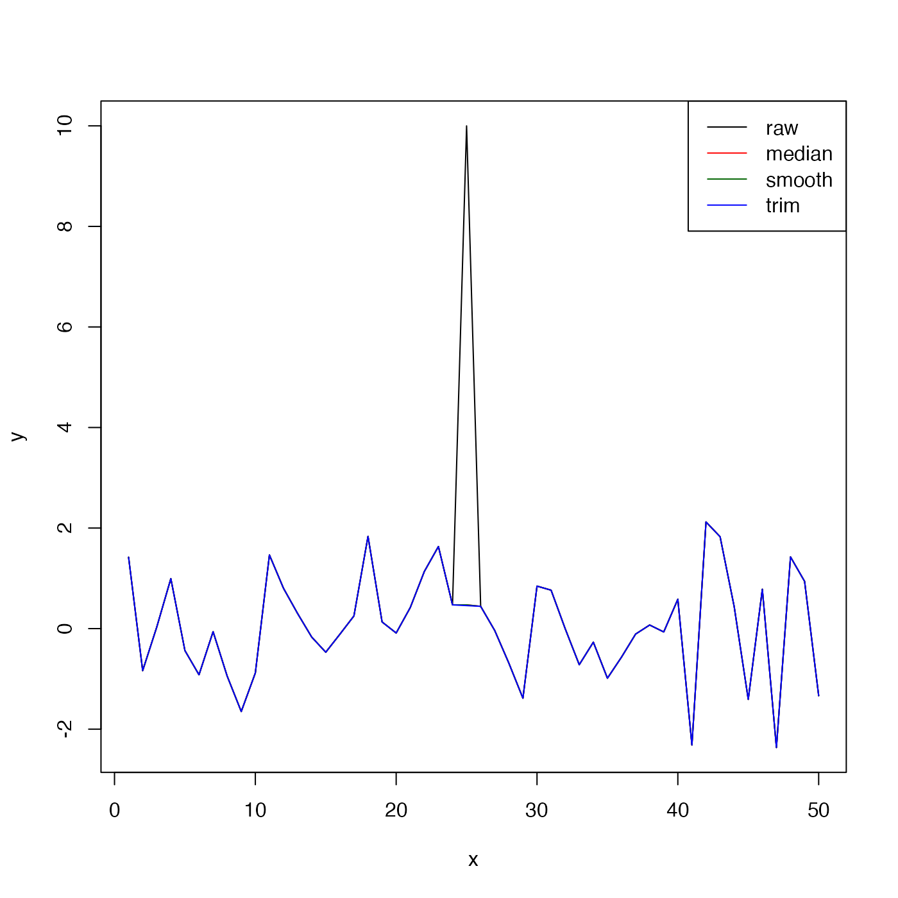

The method identifies spikes with respect to a "reference" time-series, and
replaces these spikes with the reference value, or with NA according
to the value of action; see “Details”.
Arguments
- x
a vector of (time-series) values, a list of vectors, a data frame, or an oce object.
- reference
indication of the type of reference time series to be used in the detection of spikes; see “Details”.
- n
an indication of the limit to differences between
xand the reference time series, used forreference="median"orreference="smooth"; see “Details.”- k
length of running median used with
reference="median", and ignored for other values ofreference.- min
minimum non-spike value of
x, used withreference="trim".- max
maximum non-spike value of
x, used withreference="trim".- replace
an indication of what to do with spike values, with
"reference"indicating to replace them with the reference time series, and"NA"indicating to replace them withNA.- skip
optional vector naming columns to be skipped. This is ignored if
xis a simple vector. Any items named inskipwill be passed through to the return value without modification. In some cases,despikewill set up reasonable defaults forskip, e.g. for actdobject,skipwill be set toc("time", "scan", "pressure")if it is not supplied as an argument.
Details
Three modes of operation are permitted, depending on the value of
reference.
For
reference="median", the first step is to linearly interpolate across any gaps (spots wherex==NA), usingapprox()withrule=2. The second step is to pass this throughrunmed()to get a running median spanningkelements. The result of these two steps is the "reference" time-series. Then, the standard deviation of the difference betweenxand the reference is calculated. Anyxvalues that differ from the reference by more thanntimes this standard deviation are considered to be spikes. Ifreplace="reference", the spike values are replaced with the reference, and the resultant time series is returned. Ifreplace="NA", the spikes are replaced withNA, and that result is returned.For
reference="smooth", the processing is the same as for"median", except thatsmooth()is used to calculate the reference time series.For
reference="trim", the reference time series is constructed by linear interpolation across any regions in whichx<minorx>max. (Again, this is done withapprox()withrule=2.) In this case, the value ofnis ignored, and the return value is the same asx, except that spikes are replaced with the reference series (ifreplace="reference"or withNA, ifreplace="NA".
Examples
n <- 50
x <- 1:n
y <- rnorm(n = n)
y[n / 2] <- 10 # 10 standard deviations
plot(x, y, type = "l")
lines(x, despike(y), col = "red")
lines(x, despike(y, reference = "smooth"), col = "darkgreen")
lines(x, despike(y, reference = "trim", min = -3, max = 3), col = "blue")
legend("topright",
lwd = 1, col = c("black", "red", "darkgreen", "blue"),
legend = c("raw", "median", "smooth", "trim")
)

# add a spike to a CTD object
data(ctd)
plot(ctd)
 T <- ctd[["temperature"]]
T[10] <- T[10] + 10
ctd[["temperature"]] <- T
CTD <- despike(ctd)
plot(CTD)
T <- ctd[["temperature"]]
T[10] <- T[10] + 10
ctd[["temperature"]] <- T
CTD <- despike(ctd)
plot(CTD)